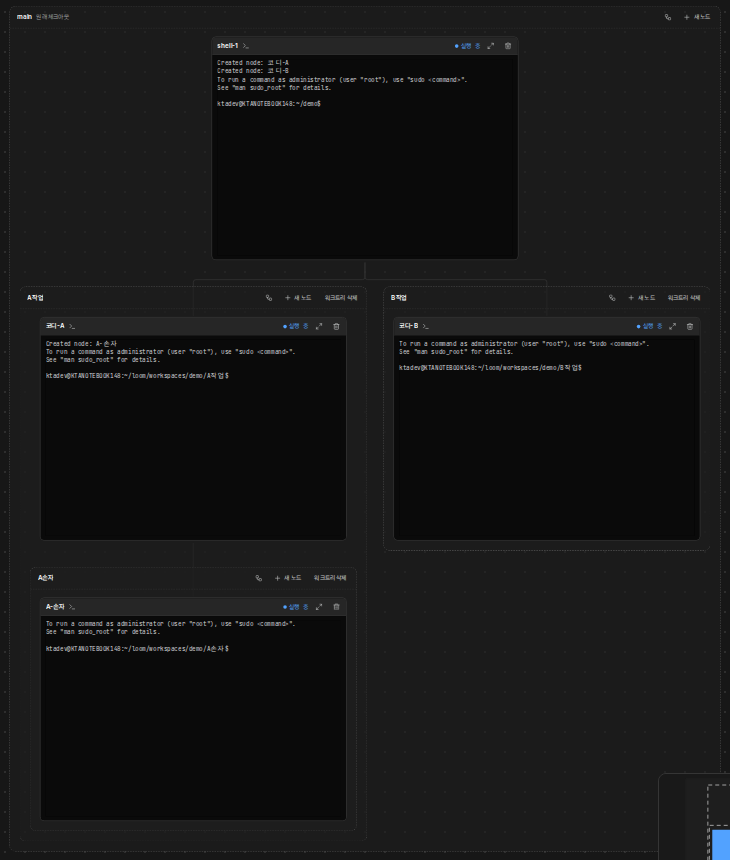
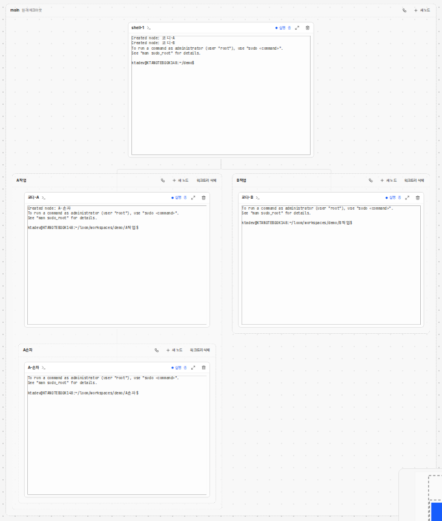

문서 ID: M15응답할 곳: 총괄 · loom 총괄연 담당: 총괄 · loom 총괄v1 · 2026-10-21
그래프: 묶음(워크트리) 테두리를 더 또렷하게
사용자 지시: 「묶음 테두리가 좀 더 명확히 보이게 해줘(목업먼저)」. 바뀌는 곳은 묶음과 저장소 상자의 테두리와 바탕뿐이다. 카드는 그대로다. 각 안에서 A작업 묶음은 선택한 상태다.
① 지금 시험 데몬 캡처 · main ⊃ A작업 ⊃ A손자, B작업


- 1px 점선이 바탕과 거의 같은 밝기라, 겹친 묶음의 경계가 잘 보이지 않는다.
demo/tmp/demo
main원래 체크아웃
shell-1
A작업
코디-A
A손자
A-손자
B작업
코디-B
② A안: 1px 실선, 진한 선 .group 1px solid · 저장소 상자 2px
- 점선을 실선으로 바꾸고 선을 진하게 한다. 바탕은 그대로다.
③ B안(권장): 1.5px 실선 + 안쪽 단계마다 바탕을 한 겹 더 .group 1.5px solid · 저장소 상자 2px
- 선이 굵고 진하다. 안쪽 묶음일수록 바탕이 한 겹씩 짙어진다(다크는 밝게, 라이트는 어둡게). 겹친 단계가 선과 면 둘 다로 보인다.
④ C안: 1.5px 점선, 진한 선 .group 1.5px dashed · 저장소 상자 2px
- 지금 모양(점선)을 지키고 굵기와 밝기만 올린다.
승인할 것
| 항목 | 안 |
|---|---|
| 묶음 테두리 | B안(권장) · A안 · C안 가운데 하나 |
| 저장소 상자 | 세 안 모두 2px 실선으로 묶음보다 굵게 둔다 |
| 선택한 묶음 | 지금처럼 강조색 테두리와 고리. 그대로 둔다 |